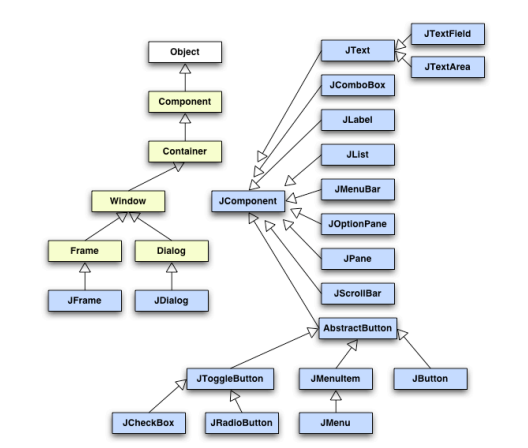

Componentes, Layouts y Navegación
Componentes Swing
Los componentes Swing son los elementos visuales que conforman la interfaz gráfica de una aplicación Java. Todos derivan de la clase JComponent, que a su vez hereda de Container y Component, dentro de la jerarquía de clases del paquete javax.swing.
Swing sigue un patrón de diseño compuesto (Composite Design Pattern), lo que significa que un componente puede contener otros componentes, formando una jerarquía recursiva. Esto permite construir interfaces complejas a partir de componentes simples y reutilizables.
Jerarquía básica de componentes
Object
└── Component
└── Container
├── Window
│ ├── Frame → JFrame
│ └── Dialog → JDialog
├── Panel → JPanel, Applet → JApplet
└── JComponent
├── JLabel
├── AbstractButton → JButton, JToggleButton, JCheckBox, JRadioButton
├── JTextComponent → JTextField, JTextArea
├── JScrollPane
├── JTable, JTree, JList
└── JMenuBar, JMenuItem

Jerarquía Básica de Componentes
Tipos principales de componentes
Contenedores de nivel superior
- JFrame: ventana principal de la aplicación.
- JDialog: cuadro de diálogo modal o no modal.
- JApplet: miniaplicación integrada en un navegador.
Componentes de entrada
- JTextField, JTextArea: campos de texto de una o varias líneas.
- JPasswordField: campo de entrada para contraseñas.
- JCheckBox, JRadioButton: selección binaria o exclusiva.
Componentes de acción
- JButton, JToggleButton: disparan eventos de acción.
- JMenuBar, JMenu, JMenuItem: permiten crear menús interactivos.
Componentes de visualización
- JLabel: muestra texto o iconos.
- JTable, JTree, JList: presentan estructuras de datos complejas.
Componentes de organización
- JPanel: agrupa otros componentes.
- JScrollPane, JSplitPane, JTabbedPane: controlan disposición y navegación.
Ejemplo: Formulario de datos
import javax.swing.*;
import java.awt.*;
public class Formulario extends JFrame {
public Formulario() {
super("Registro de usuario");
setLayout(new GridLayout(3, 2, 5, 5));
add(new JLabel("Nombre:"));
add(new JTextField(15));
add(new JLabel("Correo electrónico:"));
add(new JTextField(15));
add(new JLabel("Contraseña:"));
add(new JPasswordField(15));
pack();
setDefaultCloseOperation(EXIT_ON_CLOSE);
setVisible(true);
}
public static void main(String[] args) {
new Formulario();
}
}
Layouts (Posicionamiento de componentes visuales)
El Layout Manager es el encargado de distribuir los componentes dentro de un contenedor. Permite definir la posición y el tamaño de cada elemento de manera automática, evitando cálculos manuales.
Tipos más comunes de layouts
BorderLayout
Divide el espacio en cinco zonas: norte, sur, este, oeste y centro. Es el layout por defecto de JFrame.
FlowLayout
Coloca los componentes en fila, ajustándolos según el tamaño de la ventana. Es el layout por defecto de JPanel.
BoxLayout
Similar a FlowLayout, pero permite organizar componentes vertical u horizontalmente con mayor control sobre alineación y espacio.
GridLayout
Dispone los componentes en una tabla con filas y columnas del mismo tamaño.
GridBagLayout
Es el más flexible; permite que los componentes ocupen múltiples filas o columnas.
CardLayout
Muestra un panel a la vez, útil para implementar pantallas o formularios por pasos.
GroupLayout
Usado por los IDEs (NetBeans, IntelliJ) para diseñar interfaces gráficas de forma automática.
null (disposición absoluta)
Permite posicionar los componentes de forma manual (en píxeles). Es poco recomendable por su falta de adaptabilidad.
Ejemplo combinado: BorderLayout + GridLayout
import javax.swing.*;
import java.awt.*;
public class VentanaLayouts extends JFrame {
public VentanaLayouts() {
super("Ejemplo Layouts");
setLayout(new BorderLayout());
JPanel centro = new JPanel(new GridLayout(2, 2));
centro.add(new JButton("Uno"));
centro.add(new JButton("Dos"));
centro.add(new JButton("Tres"));
centro.add(new JButton("Cuatro"));
add(centro, BorderLayout.CENTER);
add(new JLabel("Zona superior"), BorderLayout.NORTH);
add(new JButton("Salir"), BorderLayout.SOUTH);
pack();
setVisible(true);
}
public static void main(String[] args) {
new VentanaLayouts();
}
}
Recomendación: Utiliza los Layout Managers para garantizar que la interfaz se adapte correctamente a distintas resoluciones y sistemas operativos.
Control del posicionamiento de los componentes
El control del posicionamiento de los componentes en una interfaz gráfica Swing permite ajustar la disposición y apariencia de los elementos visuales dentro de un contenedor.
Además de utilizar los gestores de diseño (Layout Managers), es posible refinar el aspecto especificando el tamaño de los componentes mediante los métodos setPreferredSize() y setMinimumSize(), garantizando que mantengan dimensiones coherentes en diferentes entornos.
En diseños que emplean BoxLayout, se puede controlar la alineación de los elementos con setAlignmentX() y setAlignmentY() para asegurar una correcta disposición horizontal o vertical.
Asimismo, se pueden añadir espacios entre componentes, ya sea mediante márgenes, paneles intermedios o el uso de bordes decorativos, logrando una interfaz más clara, equilibrada y visualmente atractiva.
Navegación entre componentes y pantallas
En aplicaciones con múltiples vistas, es necesario implementar mecanismos de navegación que permitan moverse entre diferentes pantallas, formularios o paneles.
Estrategias comunes de navegación
Uso de CardLayout Este gestor de diseño permite tener varias “tarjetas” o paneles dentro de un mismo contenedor, mostrando solo una a la vez.
Ejemplo: Navegación entre paneles con CardLayout
import javax.swing.*;
import java.awt.*;
import java.awt.event.*;
public class Navegacion extends JFrame {
private CardLayout layout;
private JPanel paneles;
public Navegacion() {
super("Navegación entre paneles");
layout = new CardLayout();
paneles = new JPanel(layout);
JPanel panel1 = new JPanel();
panel1.add(new JLabel("Pantalla 1"));
JButton siguiente = new JButton("Siguiente");
panel1.add(siguiente);
JPanel panel2 = new JPanel();
panel2.add(new JLabel("Pantalla 2"));
JButton anterior = new JButton("Anterior");
panel2.add(anterior);
paneles.add(panel1, "1");
paneles.add(panel2, "2");
add(paneles);
pack();
setDefaultCloseOperation(EXIT_ON_CLOSE);
setVisible(true);
siguiente.addActionListener(e -> layout.show(paneles, "2"));
anterior.addActionListener(e -> layout.show(paneles, "1"));
}
public static void main(String[] args) {
new Navegacion();
}
}
Selección de ficheros y menús
Clase JFileChooser
Permite al usuario seleccionar archivos o directorios.
JFileChooser f = new JFileChooser();
if (f.showOpenDialog(null) == JFileChooser.APPROVE_OPTION) {
System.out.println("Fichero seleccionado: " + f.getSelectedFile());
}
Menús
JMenuBar: barra de menús.JMenu: submenús.JMenuItem: opciones.
Ejemplo
JMenuBar barra = new JMenuBar();
JMenu menuArchivo = new JMenu("Archivo");
JMenuItem salir = new JMenuItem("Salir");
menuArchivo.add(salir);
barra.add(menuArchivo);
setJMenuBar(barra);
Mostrar y ocultar paneles
Usando setVisible(true/false) se puede alternar entre paneles o secciones sin cambiar el layout.
Diálogos modales y no modales - Un diálogo modal bloquea la interacción con la ventana principal. - Un diálogo no modal permite mantener varias ventanas abiertas.
Navegación mediante menús
Los menús (JMenuBar, JMenu, JMenuItem) permiten cambiar el contenido visible o abrir nuevas ventanas.
Buenas prácticas
- Centralizar la gestión de la navegación en un controlador.
- Mantener el modelo de datos independiente de la vista.
- Evitar la creación excesiva de ventanas; preferir paneles intercambiables.